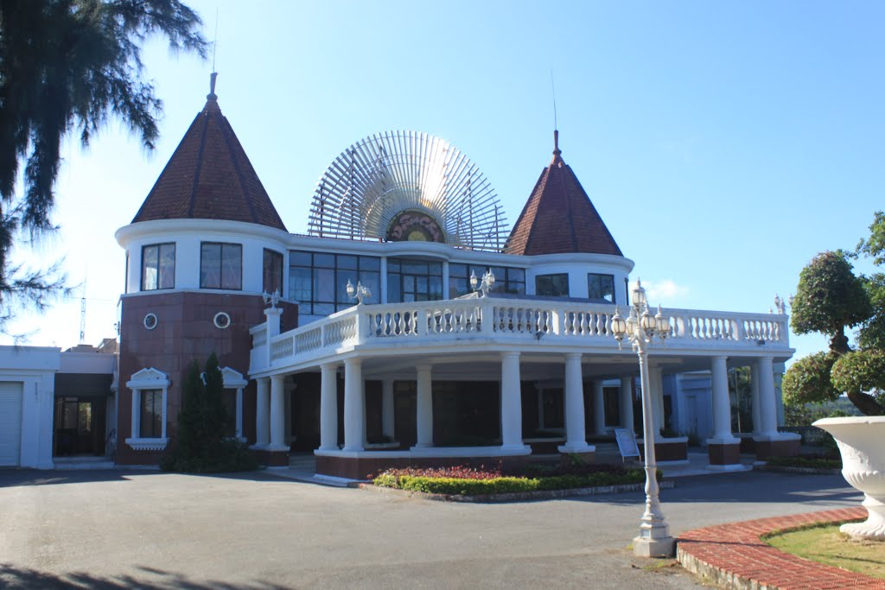

- 7 -

hưa đi chưa biết Đồ Sơn
Đi rồi mới thấy, chẳng hơn đồ nhà.
Đồ sơn là của quốc gia,
Đồ nhà là của ông bà ngoại cho.
Đồ sơn phải mất tiền bo,
Đồ nhà cứ thế ro ro mà xài.
(Ca dao mới)
Nguyễn Học sinh ra và lớn lên ở Hải Phòng, anh thuộc loại ma xó đất Cảng, còn tôi cũng như anh, nhưng xa Hải Phòng từ năm 1960, hàng năm nghỉ phép mới về, năm 1979 thành người viễn xứ, cho nên trong danh sách ma xó, tôi đã bị gạch tên từ đời tám hoánh. Kỳ này về, được ma xó Nguyễn Học đưa đi chơi, “bật mí” những chuyện mật thành phố Cảng.
Là một đại gia, các nhà hàng ở Hải Phòng có món ngon (và chưa ngon) ở bất cứ xó xỉnh, phố lớn, ngõ nhỏ hay đường quốc lộ 5 anh đều thông thuộc. Nguyễn Học hứa, đưa chúng tôi thưởng thức các nhà hàng mà anh lui tới.
Sáng sớm ngày 24-4, mới gần bẩy giờ, anh chị đã đến đón chúng tôi đi điểm tâm. Nhà hàng Gia Viên, khu Hạ Lý, sang trọng, có bãi đậu xe rộng miễn phí, có dàn nam nữ tiếp viên trẻ đẹp, đồng phục màu be, trên môi lúc nào cũng sẵn sàng nở nụ cười cầu tài, lễ phép, ân cần đón khách.
Xuống xe, Nguyễn Học ghé tai, bảo:
-Nhà hàng này có món canh bánh đa, nhưng xin nói trước, nó mô-đi-phê (modify), khác xa cái thời anh chị còn ở Việt Nam.
Bảng thực đơn có nhiều món, anh chị Nguyễn Học gọi phở, chúng tôi gọi canh bánh đa. Lâu lắm rồi, tôi chưa được ăn ở Hải Phòng, vài chục năm còn gì nữa. Trong lúc chờ, tôi nói với anh chị Nguyễn Học, bao năm nay bây giờ mới được thưởng thức đặc sản canh bánh đa Hải Phòng và kể về hương vị của nó. Chị Liên vợ anh bảo:
-Canh bánh đa bây giờ khác rồi.
-Khác là khác thế nào?
Nguyễn Học xen vào:
-Anh ơi! Thời buổi này, cái gì chả thay đổi, huống chi ẩm thực. Xưa rồi cái ngày xưa của anh chị.
Chị Liên, thêm:
-Chốc nữa anh chị xem, canh bánh đa có chả lá lốt chiên ròn, thịt lợn băm viên, còn gạch cua, họ trộn lẫn óc đậu với lòng trắng trứng.
-Trời đất! Lại có khoản ấy nữa.
Nguyễn Học cười:
-Chứ sao! Có thế nó mới chém 35 ngàn một tô chứ! Lõng bõng ít bánh, dăm cuộng rau dút, chút gạch cua, cao thủ lắm 15 ngàn/tô là hết cỡ, buôn bán thế có mà lỗ chỏng gọng!
Phở của anh chị Nguyễn Học có lòng đỏ trứng gà và đĩa quẩy. Canh bánh đa của chúng tôi đúng như chị Liên nói, có hai miếng chả lá lốt chiên, hai viên thịt lợn băm, hai miếng đậu phụ rán, rau thơm bỏ lên trên, không có rau dút.
Tôi thất vọng với món canh bánh đa này. Phải gọi chính xác, món canh bánh đa hổ lốn! Mùi lá lốt, thịt lợn băm viên, đậu phụ rán át mùi cua đồng, còn gạch cua nhấm nháp thật kỹ, óc đậu phụ + lòng trắng trứng + chút gạch cua trộn lẫn! Chịu, nuốt không trôi!
Thấy không kham nổi bát canh bánh đa, anh đưa chúng tôi đến nhà hàng bánh cuốn phố Hai Bà Trưng (Cát Dài). Bánh cuốn chay, tráng mỏng, xếp rối, rắc hành phi vàng óng ròn tan, bát nước chấm có 2 lát chả quế ngâm. Món bánh cuốn này cũng mô-đi-phê, khác bánh cuốn Thanh Trì có nhân, chúng tôi thưởng thức tuần trước ở Mã Mây, Hà Nội. Chà! Ẩm thực của Hải Phòng thay đổi đến thế rồi sao! Phở bò thêm trứng gà, ăn kèm bánh quẩy! Canh bánh đa có chả lá lốt, thịt băm viên, đâu phụ rán! Bánh cuốn không nhân, rắc đầy hành khô phi ròn, ngọt như trộn đường! Nước chấm thiếu hẳn hương vị tinh dầu cà cuống. Hóa ra về chính quê hương mình, thưởng thức món ăn dân dã lại không bằng ở nhà vợ nấu, chứ đừng nói so với các nhà hàng người Việt ở London!
Mear Street, quận Hackney, London, tập trung rất nhiều nhà hàng người Việt, nơi đây có nhiều món thuần tuý, hầu như không có chuyện mô-đi-phê như ở Hải Phòng hay ở Hà Nội. Khu nào đông người Việt, thực khách dễ dàng tìm thấy nhà hàng Việt Nam. Bánh cuốn, giò lụa, chả quế hầu như tiểu siêu thị người Việt khu nào cũng có. Có người còn rỉ tai, muốn “mộc tồn”, đặt tiền trước, sẽ có!
Ngày nay, ở Hà Nội, nhiều hiệu phở nổi tiếng cũng bán phở “cải lương”. Phở Cường, gần Hàng Mắm, nổi tiếng ngon, nhưng trên bàn cũng có đĩa quẩy, tùy thực khách nào muốn “mô-đi-phê”. Duy phở Sướng, đầu phố Đinh Liệt, vẫn trung thành phở cổ điển, nhưng kỳ này nhà hàng sạch sẽ, không còn cảnh giấy trắng xóa dưới nền nhà.
Điểm tâm xong, Nguyễn Học bảo:
-Hôm nay ta đi Đồ Sơn.
Lên xe, vừa lái, Nguyễn Học vừa đọc:
“Chưa đi chưa biết Đồ Sơn
Đi rồi mới biết là hơn đồ nhà.
Đồ nhà bằng cái lá đa
Đồ sơn bằng cái bàn là Liên Xô.”
Quay sang hỏi tôi:
-Anh đã nghe câu ca này chưa?
-Chưa.
Chị Liên ngồi hàng ghế sau với nhà tôi, lên tiếng:
-Chị em chúng tôi lại có câu:
“Chưa đi chưa biết Đồ Sơn
Đi rồi mới thấy chẳng hơn đồ nhà.
Đồ nhà tuy xấu tuy già,
Nhưng là đồ thật, không là đồ sơn.”
Vợ tôi vốn kín đáo, ít biểu lộ tình cảm ra ngoài, ấy thế cũng không thể nhịn cười. Tôi hỏi:
-Câu ca này anh chị xịa ra?
-Đâu có. Đã là người Hải Phòng, không ai là không biết.
-Có nghĩa Đồ Sơn bây giờ là tụ điểm của làng chơi?
-Chứ sao!
Rồi anh bảo:
-Nhưng đi qua khu đèn đỏ, anh không bao giờ nhìn thấy gái đứng đường ban ngày hay bướm lượn đêm khuya, người bình thường không thể biết. Đặc điểm Đồ Sơn là vậy!
Tò mò, tôi hỏi:
-Sao vậy?
-Luật bất thành văn. Bởi khu nghỉ mát này do Trung ương Đảng quản lý. Nói chính xác, của Văn phòng Trung ương Đảng bỏ vốn đầu tư!

Khu đèn đỏ ở Đồ Sơn vào ban đêm
Nghe anh nói, tôi nửa tin nửa ngờ, nhưng chỉ tuần sau, khi đi tour du lịch Sing-Mã Lai (tour của Hà Nội), mới thấy Học nói đúng. Đàn ông Hải Phòng, Hà Nội, nhiều người thuộc lòng câu ca này. Họ xác nhận, Đồ Sơn là tụ điểm của thác loạn cho tất cả đàn ông thừa tiền, rửng mỡ, thèm của lạ! Giá như ông Tô, Phó Bí thư kiêm Chủ tịch tỉnh Hà Giang, xuống Đồ Sơn chắc không có chuyện bị các “cháu chân dài” tố và báo chí sao biết mà làm rùng beng! Ông Phú đi cùng tour, mới nghỉ hưu, cựu cán bộ của Tổng Công đoàn Việt Nam, người Hà Nội, trong lúc theo hướng dẫn viên du lịch đưa đi dạo khu đèn đỏ Singapore – nơi rất tai tiếng gái Việt làm điếm chui – ghé tai tôi hỏi:
-Về Việt Nam, ông đi Đồ Sơn chưa?
-Rồi.
-Thấy thế nào? Vui vẻ chứ?
-Thế nào là thế nào?
-Lại còn vờ vĩnh nữa.
-Không, thật lòng tôi không hiểu ý ông.
Tủm tỉm cười, ông bảo:
-Có bằng cái “bàn là Liên Xô” không?
À! Hiểu rồi, tôi bảo:
-Chưa, cũng nghe kể, nhưng không tin.
Tôi kể lại chuyện Nguyễn Học sang tai, rồi hỏi nhỏ:
-Đồ Sơn bây giờ kinh khủng đến thế sao?
-Đúng 100%.
Nói xong, ông ghé tai tôi đọc câu ca mà Nguyễn Học đã đọc, rồi thì thầm:
-Nên đi cho biết, hơn “đồ nhà” nhiều. Giá mềm lắm, 150 ngàn một giờ. Em chân dài tận nách, 200 ngàn thôi.
Đi sát bên, tôi cũng thì thầm:
-Bác đi Đồ Sơn lần nào chưa?
-Vài lần.
Rồi ông nháy mắt:
-Bí mật, chớ có lộ, bà xã biết. Chết liền!
Nghề mãi dâm ở Việt Nam tuy chưa được nhà nước chấp nhận, nhưng nó tồn tại ngày một phát triển ở nhiều nơi, từ thành thị tới nông thôn, từ Bắc xuống Nam. Một địa điểm gái mãi dâm tụ tập cũng tiếng (xấu) như Đồ Sơn, đó là Quất Lâm, huyện Giao Thuỷ, tỉnh Nam Định. Khi báo chí phanh phui, nhà chức trách công khai phủ nhận tụ điểm mãi dâm ấy. Chính vì không dám nhận sự quản lý yếu kém đã để xảy ra những tụ điểm thác loạn, những tệ nạm xã hội mà người dân trong toàn quốc đều biết, riêng có quan chức của chính quyền Việt Nam Xã Hội Chủ Nghĩa không (dám) biết nên trên diễn đàn mạng đã có những câu ca dao tố cáo, vạch trần sự ngụy tạo của chính quyền từ Trung ương đến địa phương về từng sự kiện trong cuộc sống ở Việt Nam:
Đồ Sơn không có mãi dâm
Ca-ve không tới Quất Lâm hành nghề
Hài Nội không có số đề
Sài Gòn khẳng định chưa hề đua xe
Fây- Búc (Facebook) không có trẩu tre
F.A các thím chưa hề quay tay
Phương Trinh học tập hăng say
Thím Sơn chưa ngủ với gay bao giờ
Cà-phê không có đèn mờ
Ngọc Trinh chưa có ai sờ vào mông
Xe xanh chỉ chạy việc công
Xe bia (beer) bị lật không ai xông vào

Khu bãi tắm Đồ Sơn mới vào hè (2010) đã quá tải
Con đường Lạch Tray đi Đồ Sơn được mở rộng, thẳng tắp, hơn nửa giờ sau chúng tôi đã vào thị xã. Lần cuối cùng tôi đến Đồ Sơn, ngày 3-8-1964, gần 50 năm còn gì, cũng là ngày Mỹ đưa máy bay phản lực uy hiếp các tỉnh ven biển Vịnh Bắc Bộ.
Thời bấy giờ, bãi tắm Đồ Sơn chia 3 khu:
1- Khu I dành cho nhân dân.
2- Khu II dành cho cán bộ cao cấp, nơi đó có nhà nghỉ của Trung ương Đảng. Theo Học, khu nghỉ mát xây năm 1960, sửa chữa, nâng cấp và mở rộng năm 1972, 1982 và 1986.
3- Khu III, thuộc Bộ Quốc phòng.
Hồi ấy, hai khu này cấm dân vào.
Thời Pháp thuộc, cả vụ hè 1950, 1951, chị em tôi ra Pagodong của Đồ Sơn nghỉ mát. Chả là ông chú rể tôi làm nghề chiếu phim ở đấy. Người ta bảo, khu II chính là khu Pagodong, có biệt thự của Cựu hoàng Bảo Đại và bây giờ có thêm khu biệt thự của Trung ương Đảng.
Khu biệt thự Cựu hoàng mở cửa cho khách tham quan. Vé vào cửa 10 ngàn/người. Biệt thự gồm hai tầng theo lối kiến trúc của Pháp, xây trên một quả đồi, nhìn ra biển. Từ phía dưới, có con đường trải nhựa nhỏ, chạy quanh co bám theo sườn núi dẫn đến khu biệt thự. Tầng trệt có sảnh đường khá rộng, nơi họp nội các hay nơi gặp mặt thân hữu của Cựu hoàng. Giữa sảnh, có bàn dài, hai bên hai hàng ghế, hơn chục chiếc, chính giữa, hai ghế có tay ngai mạ vàng: Ghế của Cựu hoàng và Nam Phương Hoàng hậu. Kế bên, phòng đọc sách, phòng giải trí kê bàn bi-a. Tầng trên, buồng ngủ của Cựu hoàng, Hoàng tử Bảo Long và các công chúa. Buồng Cựu hoàng được đặt giá, 250 Mỹ kim/đêm cho những ai muốn thưởng thức “Nhất dạ Long sàng”. Buồng ngủ rộng, trên tường treo ảnh Cựu hoàng, Nam Phương Hoàng hậu, ảnh hoàng tử và các công chúa. Một chiếc giường đệm cỡ King Size, phủ khăn trải giường có thêu kim tuyến hình lưỡng long chầu nguyệt màu vàng. Gần đấy, bộ sa-lông da, bàn đọc sách, điện thoại. Buồng bên là buồng tắm, gồm bồn tắm hiện đại mạ vàng, nhà cầu, hệ thống điện và nước hoạt động. Tuy được chăm sóc, nhưng lâu ngày không có người ở, mùi ẩm mốc đâu đó xông vào mũi. Chà! Bỏ ra 250 Mỹ kim để làm chủ căn buồng của Cựu hoàng 24 tiếng đồng hồ kể ra cũng không đến nỗi nào. Tôi quên không hỏi người hướng dẫn, đã có ai làm chủ căn phòng ẩm mốc này một đêm chưa.

Bến Nghiêng, Đồ Sơn
Đồ Sơn bây giờ thay đổi quá nhiều. Xóm vạn chài ven đường không còn nữa, thay vào đó một cổng chào lớn, nhiều nơi đường rộng thênh thang, quanh co bám theo sườn núi, đến một bãi biển lát bê-tông, Học bảo:
-Đây là Bến Nghiêng, nơi người lính cuối cùng của quân đội viễn chinh Pháp rút khỏi Hải Phòng ngày 13-5-1955.
Xe đi qua phố chính của khu du lịch. Hai bên đường, nhà hàng, khách sạn, quán cắt tóc gội đầu, karaoke, quán bia… mọc san sát, cuộc sống thanh bình, không có một dấu hiệu nào của khu đèn đỏ như dư luận đồn thổi. Ngồi xe ô-tô đi lướt qua như tôi, làm sao có thể hình dung và tin rằng chính con phố nhỏ hẹp đáng yêu này mà lại nhiều tai tiếng đến như vậy. Học bảo:
-Mọi hoạt động ở đây do công an khu vực này bảo kê. Khách làng chơi đến đây an toàn tuyệt đối.
Rồi anh nói thêm:
-Đó là lý do vì, sao dân Hải Phòng ai cũng biết mà tụ điểm này không bị triệt phá.
Anh còn nói:
-Có người cho rằng, đây là nơi Văn phòng Trung ương Đảng bỏ vốn đầu tư.
Thấy ánh mắt của tôi nghi ngờ, anh bảo:
-Ơ hay, ngành nào chả kinh doanh, bộ nào mà chẳng muốn làm giàu. Ngay Bộ Quốc phòng cũng kinh doanh. Anh không thấy cây xăng quân đội bán đầy đường à? Bệnh viện quân y 103, 108… nhận bệnh nhân chữa tư là gì. Cứ có tiền là họ phục vụ. Trí phú địa hào bây giờ có giá chứ chẳng bị “đào tận gốc trốc tận rễ” như ngày xưa. Anh nên nhớ, ở Việt Nam ngày nay, không tiền, xin miễn nhé! Đến đâu người ta cũng bảo “đầu tiên” (tiền đâu) nếu như anh muốn được việc. Anh chị có biết câu ca thời đại bây giờ là gì không?

Khu biệt thự nghỉ mát của Trung ương Đảng
Anh thản nhiên đọc:
“Tiền là tiên là Phật
Là sức bật của tuổi thơ
Là giấc mơ của tuổi trẻ
Là sức khỏe của tuổi già
Là cái đà danh vọng
Là cái lọng che thân…”
Anh tiếp:
-Đấy, sức mạnh của đồng tiền ở Việt Nam bây giờ như thế đó. Không có tiền đóng viện phí, dù sắp chết, bệnh viện cũng không nhận. Bây giờ cái gì cũng nấp dưới chiêu bài xã hội hóa, có nghĩa phải nộp tiền. Tiền trên hết! Tiền muôn năm!
Anh cười, kể:
-Tháng trước, em đi khám răng, cậu nha sĩ bảo răng em cần nhổ. Em bảo, mồm mình bị bóp và dán băng dính lâu quá, không há to được, làm ơn nhổ răng qua hậu môn được không, mất bao nhiêu tiền tôi cũng trả. Mắt cậu ta tròn xoe kinh ngạc, chả hiểu mình nói gì.
Anh đưa chúng tôi đi vòng quanh tất cả các khu bãi tắm. Vẫn những bãi tắm ấy, ngày xưa sao tôi thấy đẹp thế, nay gần ½ thế kỷ quay lại, Đồ Sơn thay đổi quá nhiều, nhưng bãi tắm vẫn như cũ, giờ đây cảm thấy bãi tắm Đồ Sơn không còn đẹp như xưa nữa dù nó vẫn vậy. Phải chăng nước Anh là quốc đảo, xung quanh là bờ biển và chúng tôi đã từng đi du lịch, nhiều bãi biển quá đẹp, nổi tiếng ở châu Âu, nên Đồ Sơn không còn là thần tượng nữa.

Casino ở Đồ Sơn
Xe chạy tới khu vực casino, nơi dành riêng cho người nước ngoài và Việt kiều. Cũng như nhiều quốc gia Đông Nam Á, chính phủ Việt Nam không khuyến khích trò đỏ đen, vì thế số lượng sòng bạc mở ở Việt nam rất ít, trong đó có Đồ Sơn. Tuy vậy, bất chấp pháp luật, người Việt Nam ngày nay rất mê trò đỏ đen. Họ hy vọng một cách mù quáng, viển vông, một sự may mắn từ trên trời rơi xuống qua những con số đề, xổ số, lá bài, xóc đĩa. Nếu để ý, chiều chiều, rất nhiều người vào quán cóc bán nước chè, quầy xổ số… Người ta thì thầm, thậm thụt, đó chính là những con nghiện số đề, bỏ ra vài chục ngàn hay trăm ngàn… để mua hy vọng làm giàu trong vài giờ. Tiếng thở dài não ruột buông ra khi con số hy vọng trật khấc, họ lại nuôi hy vọng vào ngày mai, cho đến khi trở thành con nợ không trả nổi, thế là mất nhà. Câu thành ngữ “Chơi đề ra đê mà ở”, đã là người Việt, ai cũng biết, ấy thế, họ vẫn lao vào như con thiêu thân thấy ánh đèn!
Ngoài đề đóm, chuyện cá cược bóng đá các giải ngoại hạng Anh, Đức, Tây Ban Nha… cũng thu hút rất nhiều con bạc khát nước ở Việt Nam. Không chỉ người có tuổi mà cả sinh viên cũng nghiện. Người Việt trong và ngoài nước vẫn chưa quên vụ cá cược bóng đá triệu đô của một số cán bộ cao cấp của Đảng và nhà nước năm 2008. Đến nay, chuyện ấy đang có dấu hiệu chìm xuồng, đi vào dĩ vãng!
Các đại gia Việt Nam không được vào casino trong nước, họ sang Campuchia, Lào, Thái Lan… xả láng. Theo báo chí, mỗi năm các con bạc Việt Nam bỏ ra hàng tỷ Mỹ kim vào trò đỏ đen ở sòng bài nước ngoài. Chính phủ Việt Nam đang cân nhắc, có thể mở rộng casino cho dân nghiền trong nước, thu lại “chất xanh” rò rỉ, hơn là để nó chảy sang casino nước bạn!
Nếu nói không ngoa, hầu hết các đại gia ở Việt Nam đều ưa trò đỏ đen và o bế các em chân dài. Đó là cái “mốt”, có thế mới “sành điệu”, mới xứng danh đại gia Việt Nam ngày nay!
Ấy thế, tìm hiểu kỹ, anh bạn tôi, Học tuy là đại gia nhưng lại kỵ trò đỏ đen và “đồ sơn”. Thế mới lạ!